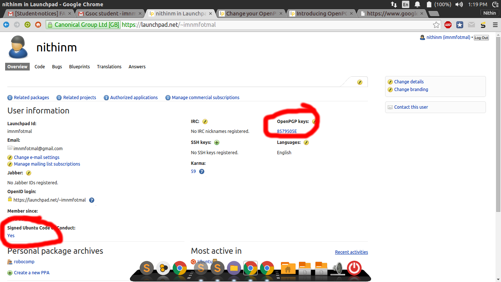

Packaging Robocomp
deb binary packages
we are using Cpack integrated with CMake for packaging robocomp.
cd ~/robocomp
mkdir build
cd build
cmake ..
cmake-gui .. # optional
make package
bash fixup_deb.sh
will create a .deb package which we can install using any packaging application like dpkg.The fixup_deb.sh script will fix the control file permissions in the script. To install the created package, just double click on it(open with Software Center) or in terminal type :
sudo dpkg -i <packagename>.deb
Setting up a PPA in launchpad
After creating a launchpad account First, you need to create and publish an OpenPGP key
Generating your key in Ubuntu
The easiest way to generate a new OpenPGP key in Ubuntu is to use the Passwords and Encryption Keys tool.
Step 1 open Passwords and Encryption Keys.
Step 2 Select File > New, select PGP Key and then follow the on-screen instructions.
Now you’ll see your new key listed in the Passwords and Encryption Keys tool. (it may take some time)
Publishing your key
Your key is useful only if other people can verify items that you sign. By publishing your key to a keyserver, which acts as a directory of people’s public keys, you can make your public key available to anyone else. Before you add your key to Launchpad, you need to push it to the Ubuntu keyserver.
Step 1 Open Passwords and Encryption Keys.
Step 2 Select the My Personal Keys tab, select your key.
Step 3 Select Remote > Sync and Publish Keys from the menu. Choose the Sync button. (You may need to add htp://keyserver.ubuntu.com to your key servers if you are not using Ubuntu.)
It can take up to thirty minutes before your key is available to Launchpad. After that time, you’re ready to import your new key into Launchpad!
OR you can directly to go http://keyserver.ubuntu.com/ on your browser and add the PGP key there
Register your key in launchpad
fire up a terminal and run gpg --fingerprint should give you fingerprints of all the keys. copy paste the required fingerprint into the launchpad
Sign Ubuntu Code of Conduct
Download the Ubuntu code of conduct form launchpad
gpg --clearsign UbuntuCodeofConductFile will sign the file
now copy the contents of the signed file and paste in launchpad
Wrapping Up
Now everything is set up. make sure you have some key in OPENPGP Keys section and also the signed code of conduct as Yes as shown.

Uploading package to PPA
launchpad will only accept source packages and not binary. Launchpad will then build the packages. For building source packages we are using debuild which is a wrapper around the dpkg-buildpackage + lintian. so you will need to install debuild and dput on your system;
The source_package.cmake script is used to create a debian source package.
The main CMakeLists.txt file defines a target spackage that builds the source package in build/Debian with make spackage
For uploading the package to ppa, First change the PPA_PGP_KEY in package_details.cmake to details to the full-name of the PGP key details registered with your ppa account For more details on setting up the pgp key see the tutorial.Then create a source package by building the target spackage.Once the Source package is build successfully, upload it to your ppa by:
cd Debian/
dput ppa:<lp-username>/<ppa-name> <packet->source.changes
building of source package can be tested with:
cd Debian/robocomp-<version>
debuild -i -us -uc -S
If you are uploading a new version of robocomp, change the version number accordingly in the toplevel cmake before building, and then upload the source package as mentioned.
Note:
If you want to upload another source package to PPA which doesn’t have any changes in the source but maybe in the Debian files. you can build the spackage after commenting out set(DEB_SOURCE_CHANGES "CHANGED" CACHE STRING "source changed since the last upload") in package_details.cmake so that the script will only increase the PPA version number and won’t include the source package for uploading to PPA (which otherwise will give an error).
Installing robocomp from PPA
First, you will need to add the PPA in your sources and then install robocomp package.
sudo add-apt-repository ppa:<lp-username>/robocomp
sudo apt-get update
sudo apt-get install robocomp
this will install robocomp along with basic components into /opt/robocomp.